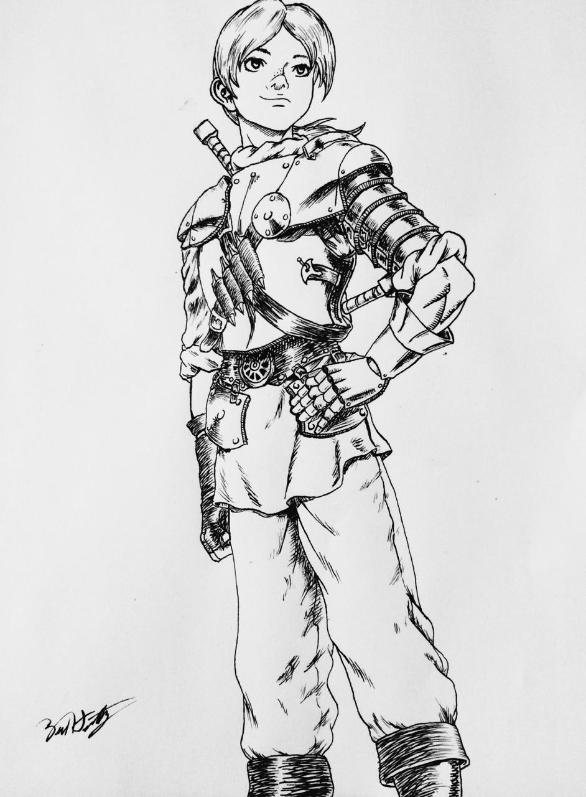

Charaters
Guts

Guts is a Swordsman who is haunted by Monsters. A brand leads the demons to him. At nighttime they materialize and try to take his life. He wonders the land with one Task in mind: slay an organization named "God Hand", who are responsible for his brand. The organization’s Leaders consist of five members thumb is occupied by Void, index finger by Femto, middle finger by Slan, ring finger by Ubik, and pinky finger by Conrad.
Guts leads the Frontline of the Hawks army. He is a battle tested warrior who has survived the horrors of a battlefield ever since he was a child. Being born into a mercenary group, he was forced by his
father to participate in war when he was only six years of age. Swords are much too heavy for a small kid, still Guts prevailed in swords man ship wielding weapons way to big for him. Many things now
are similar too his childhood life, he still fights with a Sword even too huge for his body height and he still works as a merc. It is all he has ever now, but he longs for a real purpose in life, as
Swordsmanship has been nothing but a means of survival for him. In his search he becomes part of the "band of the hawks", a mercenary group led on by the white hawk Griffith, as an individual who pursues his dream and has found his calling in life, he becomes an idol for Guts earning his respect and his friendship.
Grifith
Grifith's dream is to rule his own kingdom, and one thing is for sure he is a great leader. Adored by the band of the hawk, Grifith leads the group to glory. For his dream and the soldiers who died for his cause he has to prevail. Conquering land in midland against the Kushans he gains the attention of the crown. Fighting under midlands king he climbs the ranks in royal court not only becoming lord over all challenges he faces but aslow being promoted to one by the king as a commoner. He is a walking success story to be admired, with only leaves the question of how many he is willing to sacrifice for his dream, for this is not a chess game where even if one king stands alone, he has won. Someone who wants to rule needs followers dedicated to them and as such the ruler must be dedicated to his followers as well.
Casca
Casca has been a dedicated member of the Hawks since her childhood. The leader of the Hawks Grifith saved her from a life of slavery and abuse and inspired her to become a stronger person who is able to stand up for herself. But more than that she develops an obsession towards Grifith as ever since she joined the hawks her life changed for the better and the embodiment of the positive Change, for Casca was Grifith. Selfless and dedicated, she executed every command given and put her life on the line multiple times for Grifiths wars. Even when he didn't ask, she was there for him to support him when he struggled with himself. Feeling useful was for filling for her, so needless to say, when Guts joined and both Grifiths needs and Attention were transferred to Guts, Conflict was unable to be avoided.
Judeau

A simple man, yet still he still has his comrades’ best interests at heart. He is not very skilled in any form of fighting but knows how to survive. He is an essential part of the group as he puts peace within the group in the first place. Whenever somebody has a problem, he will lend an ear and work on a solution.
Pippin
A resource full and reliable person. Quite a giant, wielding a hammer, he crushes enemies like flies. The silent backbone of the group.
Rickert
One of the youngest among the Hawks as he is only a child. He idolizes Guts, which to me is funny because he resembles him. Like Guts, he is a child raised on the battlefield the only difference is that Rickert doesn’t actually fight, he is a nurse. Maiby in another life guts could have turned out similar to him.
Rickert
Famous Last words: “I feel like I am a minor character in a crazy story somebody wrote.”
Zodd
The Strongest Apostle out of the God Hand, nicknamed Zodd the unkillable. When Guts faced him he was aware of the legends surrounding Zodd, when they turned out true Guts was left with nothing but terror as a man who transformed into a Minotaur-like monster stood before him. Were it not for the strange talisman Grifith wore called Behelith, Zodd would have killed them both right on the spot, instead of sparing their lives.
King
You think he is a good guy, but turns out he is an ass.
Princess
Not hopelessly in love with Grifith but not being aware enough to see through Grifith's manipulation is not a better fate. Also, she is self-centered impersonated.
Julius
You think he is an ass, and he is, but he did not deserve what happened to him and his family.
Minister Foss

You think he is an ass, but he is actually very relatable (in my opinion of course, I don’t speak for nobody but myself).
Impressum
Zurück